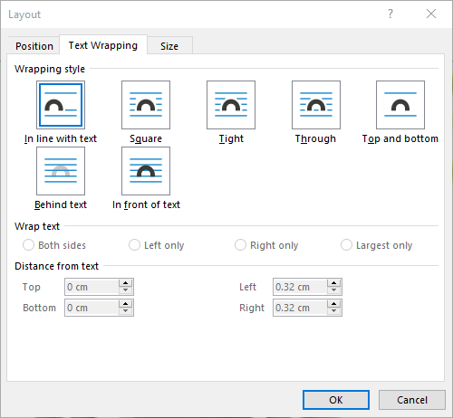

pdf2docx开发概要：创建浮动图片¶
2020-10-25 | process automation
python-docx库支持以内联形状（Inline Shape）的形式插入图片，即图片和文本之间没有重叠，遵循所谓的流动版式（flow layout）。截至最新的0.8.10版本，python-docx尚不支持插入浮动图片（floating picture）。这显然不能满足丰富多彩的文档样式的需要，因此本文探究基于python-docx插入浮动图片的方法。
问题提出¶
在提取PDF页面元素的过程中，我们已知背景图片的具体位置（例如左上角点坐标和图片区域的长宽），现在需要将其重现在docx页面相应的位置。考虑到可能与文本区域重叠，我们需要实现精确定位的浮动图片。

MS Word中的设置¶
我们先尝试在Office Word中，手动解决上述问题。有一点Word使用经验即可知，通过设置 图片版式 来控制图片的浮动和具体位置。下图版式设置中的文本环绕样式，大体可以分为三类：
| 分类 | 文本重叠 | 自由定位 | 样式名称 |
|---|---|---|---|
| 嵌入型 | 否 | 否 | In line with text |
| 环绕型 | 否 | 是 | Square, Tight, Through, Top and bottom |
| 完全浮动 | 是 | 是 | behind text, In front of text |
例如最常见的嵌入型图片，它占据了整行区域，我们既不能将其与文字重叠，也不能自由放置它的位置，而是由页面排版自动确定。对于环绕型图片，文本可以进入图片所在行，但是无法与之重叠；并且，我们可以用鼠标自由拖动其位置。完全浮动型图片则可以浮于文本上方或者衬于文本下方，同时支持随意放置其位置。
如果需要精确定位，则可在图片版式的位置（Position）选项卡进行设置。它提供了多种定位方式，例如 绝对定位——根据图片左上角点距离水平和竖直参考的坐标值来定位。至于参考对象，可以是页面（Page）本身，这样(0, 0)就是页面左上角；也可以是边距（Margin），此时(0, 0)即为正文区域的左上角点。
综上，我们需要实现精确定位的 衬于文本下方 的图片版式。

docx背后的xml¶
我们还知道，docx文档的背后是xml格式的数据，python-docx正是通过处理xml的方式来读写word文档的。所以，接下来先手工创建word文档，然后查看图片部分的xml内容。
作为对比，首先分别创建一个普通嵌入型图片文件和一个衬于文本下方的浮动型图片文件。然后执行查看步骤：右键docx文件 | 7-zip打开压缩包 | word | document.xml，复制文件内容并格式化xml，得到如下的关于图片部分的片段。为了便于对比分析，删除了一些节点属性。
内联图片片段：
<w:drawing>
<wp:inline>
<wp:extent cx="3297600" cy="2782800"/>
<wp:effectExtent l="0" t="0" r="0" b="0"/>
<wp:docPr id="1" name="Picture 1"/>
<wp:cNvGraphicFramePr>
<a:graphicFrameLocks/>
</wp:cNvGraphicFramePr>
<a:graphic>
<a:graphicData>
<pic:pic>
<!-- more pic content -->
</pic:pic>
</a:graphicData>
</a:graphic>
</wp:inline>
</w:drawing>浮动图片片段：
<w:drawing>
<wp:anchor behindDoc="1" locked="0" layoutInCell="1" allowOverlap="1">
<wp:simplePos x="0" y="0"/>
<wp:positionH relativeFrom="page">
<wp:posOffset>285750</wp:posOffset>
</wp:positionH>
<wp:positionV relativeFrom="page">
<wp:posOffset>457200</wp:posOffset>
</wp:positionV>
<wp:extent cx="3297600" cy="2782800"/>
<wp:effectExtent l="0" t="0" r="0" b="0"/>
<wp:wrapNone/>
<wp:docPr id="1" name="Picture 1"/>
<wp:cNvGraphicFramePr>
<a:graphicFrameLocks/>
</wp:cNvGraphicFramePr>
<a:graphic>
<a:graphicData>
<pic:pic>
<!-- more pic content -->
</pic:pic>
</a:graphicData>
</a:graphic>
</wp:anchor>
</w:drawing>对比发现以下相同/相似点：
- 两类图片都放在
<w:drawing>节点下，只不过内联图片<wp:inline>，浮动图片<wp:anchor>。 - 相同的内容节点
<wp:extent>、<wp:docPr>、<a:graphic>等。
除此之外，浮动图片还有一些独有特征，并且我们可以从命名上猜测和解读：
<wp:anchor>节点的behindDoc属性表明图片版式为衬于文本下方。<wp:positionH>和<wp:positionV>节点表明水平和竖直绝对定位方式，relativeFrom属性指定用于定位的参考对象，子节点<wp:posOffset>指定具体坐标值。
从内联图片开始¶
从xml的结构对比来看，我们完全可以根据python-docx对内联图片的实现来插入浮动图片。于是，从插入内联图片的代码入手：
from docx import Document
from docx.shared import Pt
document = Document()
document.add_picture('image.jpg', width=Pt(200))
document.save('output.docx')从python-docx安装文件夹site-packages/docx进行内容搜索add_picture，得到docx.text.run.add_picture原始定义处：
def add_picture(self, image_path_or_stream, width=None, height=None):
inline = self.part.new_pic_inline(image_path_or_stream, width, height)
self._r.add_drawing(inline)
return InlineShape(inline)继续搜索new_pic_inline得到docx.parts.story.BaseStoryPart.new_pic_inline。从注释可知这是利用CT_Inline类创建<wp:inline>元素，后续创建浮动图片的<wp:anchor>将在此基础上修改。
def new_pic_inline(self, image_descriptor, width, height):
"""Return a newly-created `w:inline` element.
The element contains the image specified by *image_descriptor* and is scaled
based on the values of *width* and *height*.
"""
rId, image = self.get_or_add_image(image_descriptor)
cx, cy = image.scaled_dimensions(width, height)
shape_id, filename = self.next_id, image.filename
return CT_Inline.new_pic_inline(shape_id, rId, filename, cx, cy)于是进入CT_Inline类（限于篇幅，删除了前两个类方法的具体代码）——终于见到了一开始探索的xml代码，简单扫一下三个类方法，即可将它们联系上：
_inline_xml()方法给出内联图片<wp:inline>的xml结构。new()方法调用_inline_xml()，并为其中的子节点例如<wp:extent>和<wp:docPr>赋值。new_pic_inline()调用new()，同时拼接CT_Picture类的结果（<pic:pic>，图片的具体内容）到<a:graphicData>节点中去。
综上，实现了内联图片的完整xml结构。
class CT_Inline(BaseOxmlElement):
"""
``<w:inline>`` element, container for an inline shape.
"""
@classmethod
def new(cls, cx, cy, shape_id, pic):
pass
@classmethod
def new_pic_inline(cls, shape_id, rId, filename, cx, cy):
pass
@classmethod
def _inline_xml(cls):
return (
'<wp:inline %s>\n'
' <wp:extent cx="914400" cy="914400"/>\n'
' <wp:docPr id="666" name="unnamed"/>\n'
' <wp:cNvGraphicFramePr>\n'
' <a:graphicFrameLocks noChangeAspect="1"/>\n'
' </wp:cNvGraphicFramePr>\n'
' <a:graphic>\n'
' <a:graphicData uri="URI not set"/>\n'
' </a:graphic>\n'
'</wp:inline>' % nsdecls('wp', 'a', 'pic', 'r')
)插入浮动图片¶
从xml结构的对比及上述python-docx对内联图片的实现，得到创建浮动图片的思路：
- 初始化
<wp:anchor>结构，例如behindDoc="1"指定图片版式为衬于文本下方 - 使用类似的代码填充
<wp:anchor>元素，尤其是<wp:extent>、<wp:docPr>和<pic:pic> - 填充
<wp:positionH>和<wp:positionV>精确定位图片
具体实践中发现还有关键的一步，注册xml标签名称与对应的类，例如<wp:inline>和CT_Inline
# docx.oxml.__init__.py
register_element_cls('wp:inline', CT_Inline)最后，利用python-docx插入浮动图片（衬于文本下方、页面定位）的完整代码如下：
# -*- coding: utf-8 -*-
'''
Implement floating image based on python-docx.
- Text wrapping style: BEHIND TEXT <wp:anchor behindDoc="1">
- Picture position: top-left corner of PAGE `<wp:positionH relativeFrom="page">`.
Create a docx sample (Layout | Positions | More Layout Options) and explore the
source xml (Open as a zip | word | document.xml) to implement other text wrapping
styles and position modes per `CT_Anchor._anchor_xml()`.
'''
from docx.oxml import parse_xml, register_element_cls
from docx.oxml.ns import nsdecls
from docx.oxml.shape import CT_Picture
from docx.oxml.xmlchemy import BaseOxmlElement, OneAndOnlyOne
# refer to docx.oxml.shape.CT_Inline
class CT_Anchor(BaseOxmlElement):
"""
``<w:anchor>`` element, container for a floating image.
"""
extent = OneAndOnlyOne('wp:extent')
docPr = OneAndOnlyOne('wp:docPr')
graphic = OneAndOnlyOne('a:graphic')
@classmethod
def new(cls, cx, cy, shape_id, pic, pos_x, pos_y):
"""
Return a new ``<wp:anchor>`` element populated with the values passed
as parameters.
"""
anchor = parse_xml(cls._anchor_xml(pos_x, pos_y))
anchor.extent.cx = cx
anchor.extent.cy = cy
anchor.docPr.id = shape_id
anchor.docPr.name = 'Picture %d' % shape_id
anchor.graphic.graphicData.uri = (
'http://schemas.openxmlformats.org/drawingml/2006/picture'
)
anchor.graphic.graphicData._insert_pic(pic)
return anchor
@classmethod
def new_pic_anchor(cls, shape_id, rId, filename, cx, cy, pos_x, pos_y):
"""
Return a new `wp:anchor` element containing the `pic:pic` element
specified by the argument values.
"""
pic_id = 0 # Word doesn't seem to use this, but does not omit it
pic = CT_Picture.new(pic_id, filename, rId, cx, cy)
anchor = cls.new(cx, cy, shape_id, pic, pos_x, pos_y)
anchor.graphic.graphicData._insert_pic(pic)
return anchor
@classmethod
def _anchor_xml(cls, pos_x, pos_y):
return (
'<wp:anchor distT="0" distB="0" distL="0" distR="0" simplePos="0" relativeHeight="0" \n'
' behindDoc="1" locked="0" layoutInCell="1" allowOverlap="1" \n'
' %s>\n'
' <wp:simplePos x="0" y="0"/>\n'
' <wp:positionH relativeFrom="page">\n'
' <wp:posOffset>%d</wp:posOffset>\n'
' </wp:positionH>\n'
' <wp:positionV relativeFrom="page">\n'
' <wp:posOffset>%d</wp:posOffset>\n'
' </wp:positionV>\n'
' <wp:extent cx="914400" cy="914400"/>\n'
' <wp:wrapNone/>\n'
' <wp:docPr id="666" name="unnamed"/>\n'
' <wp:cNvGraphicFramePr>\n'
' <a:graphicFrameLocks noChangeAspect="1"/>\n'
' </wp:cNvGraphicFramePr>\n'
' <a:graphic>\n'
' <a:graphicData uri="URI not set"/>\n'
' </a:graphic>\n'
'</wp:anchor>' % ( nsdecls('wp', 'a', 'pic', 'r'), int(pos_x), int(pos_y) )
)
# refer to docx.parts.story.BaseStoryPart.new_pic_inline
def new_pic_anchor(part, image_descriptor, width, height, pos_x, pos_y):
"""Return a newly-created `w:anchor` element.
The element contains the image specified by *image_descriptor* and is scaled
based on the values of *width* and *height*.
"""
rId, image = part.get_or_add_image(image_descriptor)
cx, cy = image.scaled_dimensions(width, height)
shape_id, filename = part.next_id, image.filename
return CT_Anchor.new_pic_anchor(shape_id, rId, filename, cx, cy, pos_x, pos_y)
# refer to docx.text.run.add_picture
def add_float_picture(p, image_path_or_stream, width=None, height=None, pos_x=0, pos_y=0):
"""Add float picture at fixed position `pos_x` and `pos_y` to the top-left point of page.
"""
run = p.add_run()
anchor = new_pic_anchor(run.part, image_path_or_stream, width, height, pos_x, pos_y)
run._r.add_drawing(anchor)
# refer to docx.oxml.__init__.py
register_element_cls('wp:anchor', CT_Anchor)
if __name__ == '__main__':
from docx import Document
from docx.shared import Inches, Pt
document = Document()
# add a floating image
p = document.add_paragraph()
add_float_picture(p, 'test.png', width=Inches(5.0), pos_x=Pt(20), pos_y=Pt(30))
# add text
p.add_run('Hello World'*50)
document.save('output.docx')